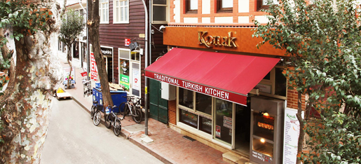

Hakkımızda
İstanbul’un incisi ve en güzel ilçesi Adalar yani nam-ı diğer Prens Adaları; Sedefadası, Kınalıada, Burgazada, Heybeliada ve Büyükada’dan oluşmaktadır. Adından da anlaşıldığı gibi Büyükada bu beş adanın en büyüğüdür.
Konak Lokantası 1979 yılında geleneksel Türk-Osmanlı Mutfağı’nda uzun sure çırak, aşçı ve şef-aşçı olarak emek vermiş Asım Düzcan ve kardeşleri tarafından Büyükada’da kuruldu.
1986 yılında “Büyükada Konak Et ve Balık Lokantası” adıyla geleneksel Türk-Osmanlı Mutfağını en iyi şekilde temsil ederek zamanla Büyükada’nın hatta tüm İstanbul’un en özel lokantalarından biri haline geldi.
Konak Et ve Balık Lokantası; sadece lezzetiyle değil, kullandığı ürünlerin kalitesi ve mutfağının hijyeniyle de düzenli müşterilerinin ve damak zevkine düşkün ada ziyaretçilerinin gönlünde taht kurdu.
İlerlemiş yaşına rağmen her gün işinin başında olan Konak’ın kurucusu Asım Usta, işe başladığı günkü heyecanı ve tutkusuyla işini yapmaya devam ediyor.
Eşsiz manzarası, denize sıfır bahçesi, geniş ve ferah salonuyla Büyükada’nın simgelerinden olan Konak Et ve Balık Lokantası, siz değerli ada ziyaretçilerini de bu benzersiz deneyimi yaşamaya davet ediyor.